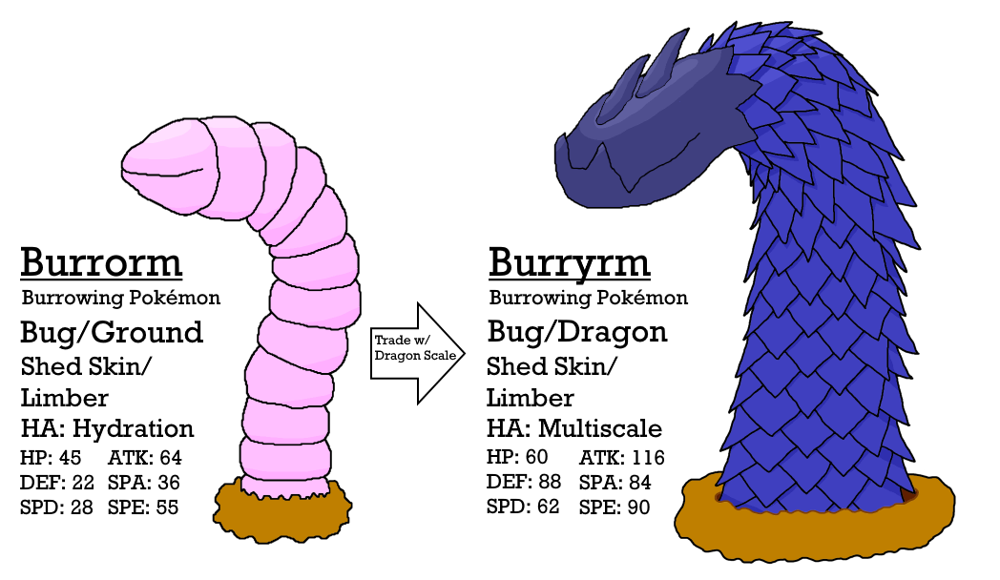

One of my longest-running projects is a design document for a hypothetical set of Pokémon games, if I were to design them. The document includes a new region based on Greece, almost 100 new Pokémon and forms (with fully-defined stats, movepools, PokéDex entries, the whole nine yards), a filled dex of other included Pokémon in the region (picked to match Greek mythology and otherwise on balancing of type availability and local distribution), and much more.
The reason I am showing it on my portfolio is to show off my design skills, thought processes, and my passion and dedication. Putting this project into production, either on my own using one of the many Pokémon-game-making-kits out there, or in some distant future somehow proposing it to Game Freak, will probably never happen. This is a AAA series we're talking about, after all.
Along with the raw spreadsheets that can be downloaded below, I am also working on a website that presents this work in a nicer format, along with the artwork of my Pokémon I am creating (such as the one above). It can be found through this link.